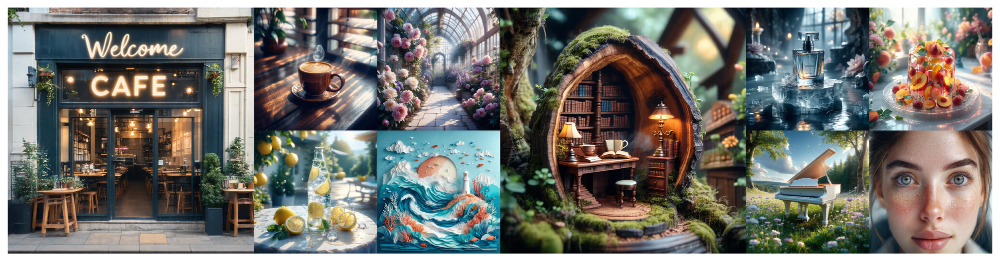
Sample images generated by AlignGraft on the SD3.5-Large backbone. The generations align with the text prompt and human preference while keeping strong visual aesthetics.
More image examples ↓Sample videos generated by AlignGraft on the Wan-Fun-14B backbone. Each case shows the source base (Wan-Fun-1.3B), the aligned source, the frozen large model (Wan-Fun-14B), and large model + AlignGraft.
More video examples ↓Aligning a text-to-image generation flow model with a reward makes it follow objectives that the training data alone does not provide. Alignment fine-tuning delivers this by reinforcement learning (RL) or preference optimization, but it must be repeated for every checkpoint and returns a model fixed at the reward and strength it was trained with. Test-time alignment instead steers a frozen model during sampling, allowing task-specific and sample-specific guidance. Existing methods obtain this only by drawing the per-step signal from the reward function itself, through its gradient, or through a separately trained value function.
We propose changing the supervision source: let a pair of weak models, not a reward function, supply the supervision. A source aligned model, kept together with its base as a source alignment pair, stores its training reward as an implicit, step-wise, KL-anchored signal expressed in the sampler's own coordinates. We explore whether this model-form supervision can cross scale, and show that it does: our method, AlignGraft, aligns a larger, frozen, never-tuned model by adding the pair's velocity difference during sampling. The transport is exact under a shared noising kernel and needs neither the reward nor its gradient at test time. The method has no schedules, only a single scalar that controls the alignment strength and can extrapolate it beyond that of the source alignment pair.
Across image and video flow models (Stable Diffusion 3.5, FLUX, and Wan), the transfer lifts the frozen large model on preference, compositional, and text-rendering rewards, can exceed the source aligned model itself, and preserves the large model's fidelity at a small constant sampling overhead. Extensive experiments show that one alignment run on a weak model produces supervision that the whole model family can reuse at test time.
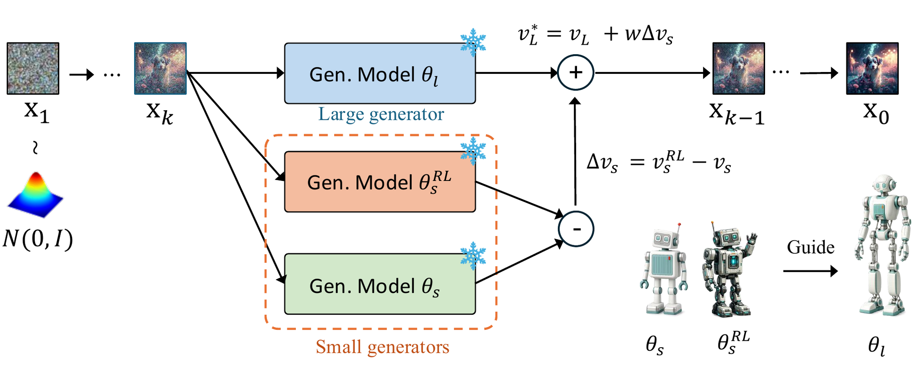
A small frozen source pair \((\theta_s,\theta_s^{\mathrm{RL}})\) supplies an alignment delta \(\Delta v_s\) that steers a larger, frozen, never-tuned target model \(\theta_l\) during sampling — no training, no reward model, no gradients.
At every sampling step, add the source pair's alignment delta to the target model's velocity:
\[ v_l^{\star}(z,t)\;=\;v_l(z,t)\;+\;w\,\underbrace{\big(v_s^{\mathrm{RL}}(z,t)-v_s(z,t)\big)}_{\Delta v_s(z,t)} \]The density-ratio tilt reduces to one additive velocity term; every \(t\)-dependent factor cancels exactly, so there is no schedule, no window, no filter, and no tuned exponent. \(w\) is the single exposed knob.
We are given three frozen generators from one model family: a large target model \(\theta_l\), and a small source pair — a base model \(\theta_s\) and its aligned counterpart \(\theta_s^{\mathrm{RL}}\), post-trained against a reward \(r\) under a KL constraint. The pair stores \(r\) implicitly as a log-density ratio \( r(z_0)/\beta = \log\big(p_s^{\mathrm{RL}}(z_0)/p_s(z_0)\big) + \text{const} \). AlignGraft samples from the target aligned to the same reward, \( p^{\star}(z_0)\propto p_l(z_0)\,[\,p_s^{\mathrm{RL}}(z_0)/p_s(z_0)\,]^{w} \), using only forward passes of the three frozen models — no access to \(r\), no gradients, no candidate search.
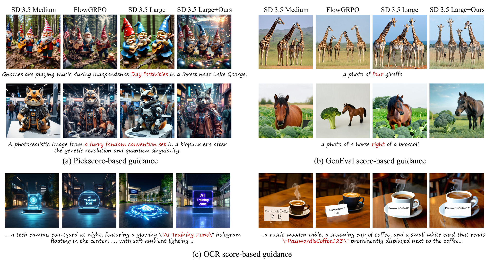
Transfer across source rewards on SD3.5. Blocks (a) PickScore, (b) GenEval, and (c) OCR each transfer a Flow-GRPO source pair into the frozen SD3.5-Large target. Columns: source base (SD3.5-Medium), aligned source (Flow-GRPO), frozen target (SD3.5-Large), and our transfer (SD3.5-Large + AlignGraft). Each reward transfers its own behavior while the target keeps its native fidelity.
| Method | Aes | Pick | IR | HPS |
|---|---|---|---|---|
| SD3.5-M (source base) | 5.929 | 22.54 | 1.084 | 0.3003 |
| Flow-GRPO (aligned source) | 6.350 | 23.85 | 1.404 | 0.3318 |
| SD3.5-L (large model) | 5.982 | 22.70 | 1.154 | 0.3072 |
| SD3.5-L + AlignGraft | 6.496 | 24.06 | 1.384 | 0.3360 |
PickScore source pair transferred into frozen SD3.5-Large (\(w{=}3\)). The transfer lifts the larger model above the aligned source itself.
| Method | Overall | Single | Two | Count | Colors | Position | Color attr. |
|---|---|---|---|---|---|---|---|
| SD3.5-M (source base) | 0.63 | 0.98 | 0.82 | 0.55 | 0.81 | 0.28 | 0.52 |
| Flow-GRPO (aligned source) | 0.93 | 0.99 | 0.98 | 0.88 | 0.91 | 0.90 | 0.82 |
| SD3.5-L (large model) | 0.68 | 0.97 | 0.85 | 0.67 | 0.84 | 0.28 | 0.61 |
| SD3.5-L + AlignGraft | 0.90 | 0.99 | 0.97 | 0.84 | 0.87 | 0.91 | 0.79 |
GenEval source pair transferred into frozen SD3.5-Large (\(w{=}2\)). Overall score rises \(0.68\!\rightarrow\!0.90\), with the largest gains on position and counting.
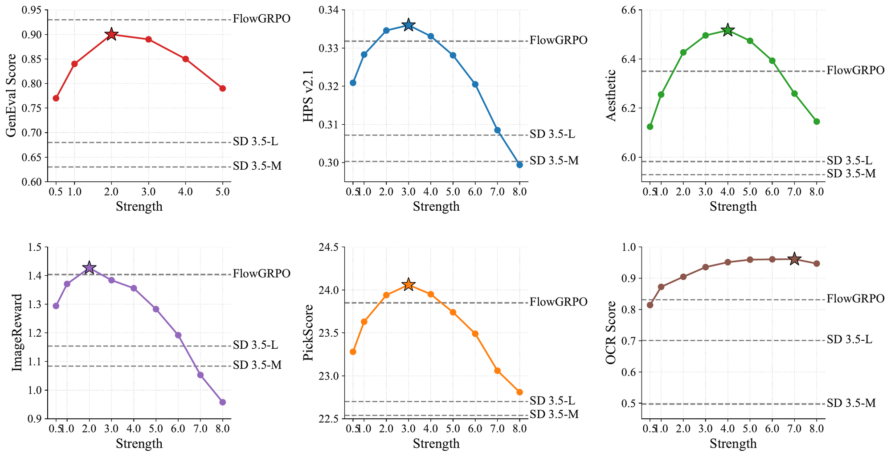
Guidance-strength search on SD3.5: six reward metrics as \(w\) sweeps \(0.5\)–\(8\), with source base, aligned source, and frozen target as dashed references. Every metric follows an inverted U, peaking at or above the aligned source.
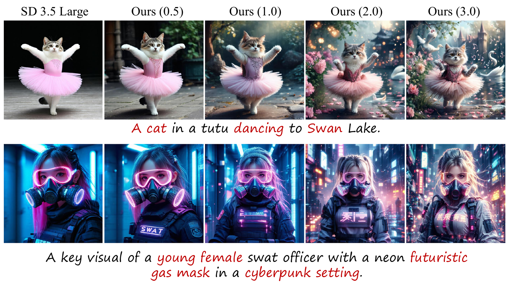
AlignGraft under different guidance strength \(w\) on SD3.5 backbones. At moderate \(w\) the transferred reward and the visual quality improve together; past a peak, larger \(w\) over-extrapolates the source pair's KL anchor.
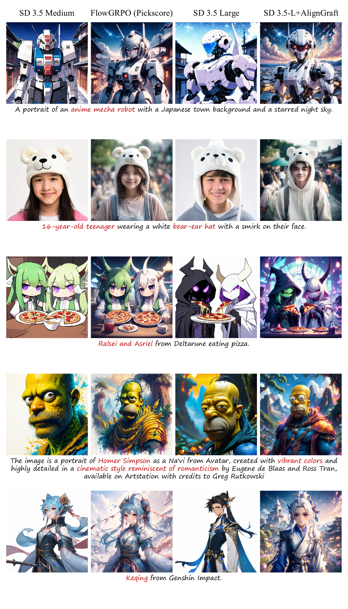
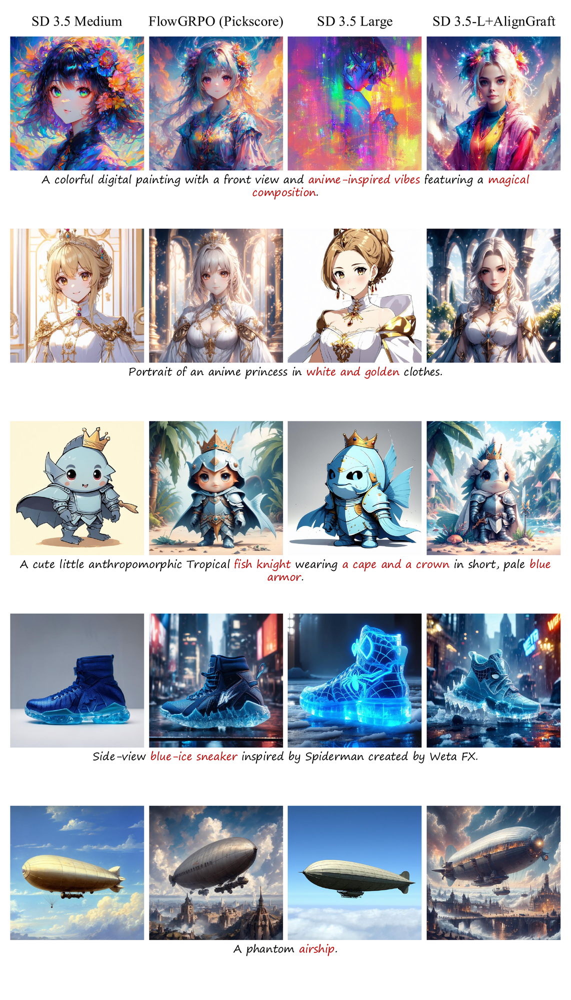
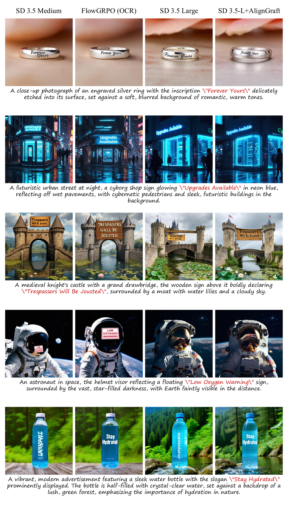
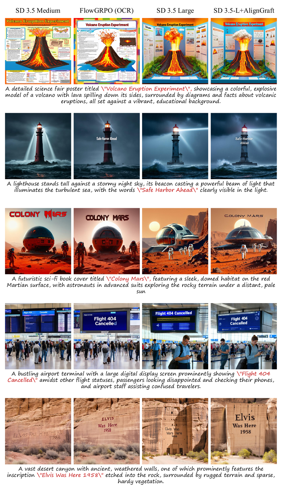
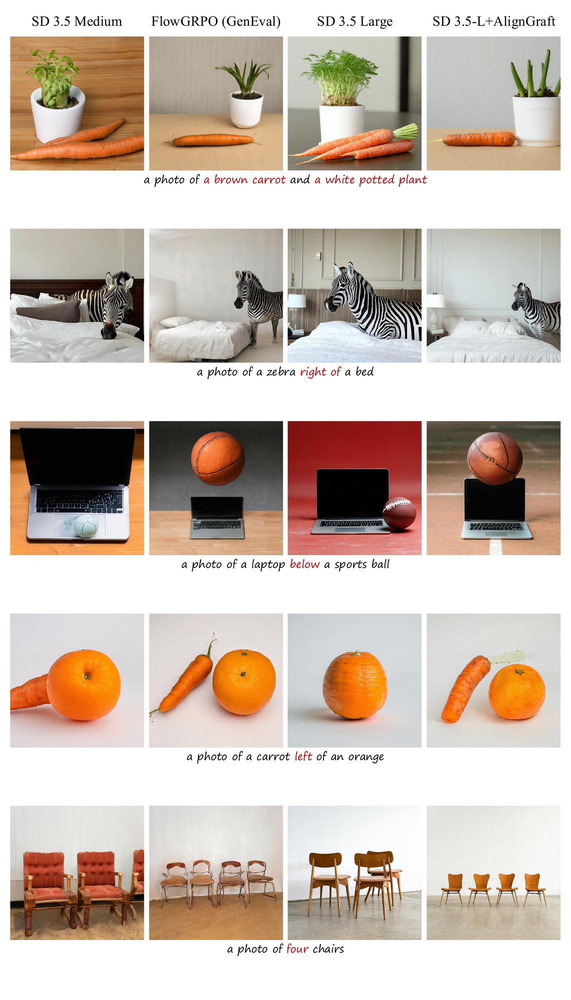
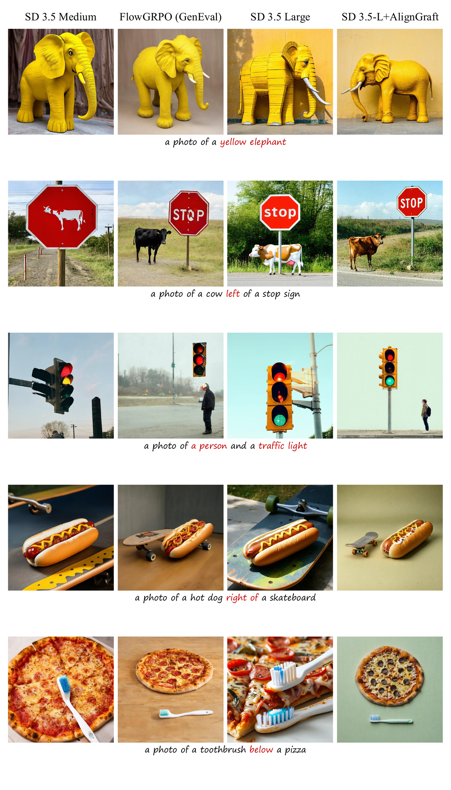
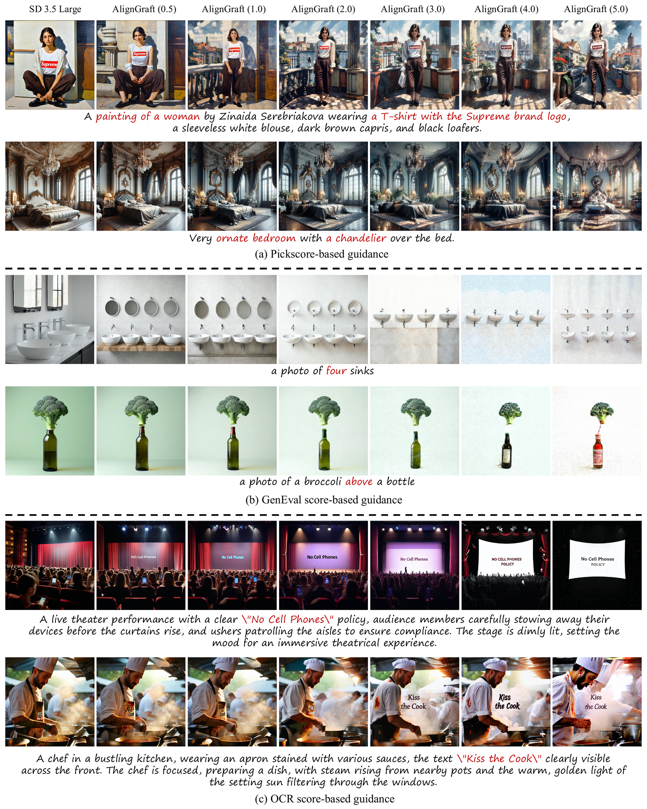
The transfer requires only a shared latent space and forward kernel — not a scaled-up sibling or the image modality. We test a same-family FLUX sibling and the video modality (Wan); both improve on the quantitative metrics as well.
| Method | Aes | Pick | IR | HPS |
|---|---|---|---|---|
| FLUX.1-dev (source base) | 6.217 | 22.75 | 1.097 | 0.3087 |
| DanceGRPO (aligned source) | 6.445 | 23.12 | 1.276 | 0.3463 |
| FLUX.1-Krea (large model) | 6.041 | 22.86 | 1.143 | 0.3051 |
| FLUX.1-Krea + AlignGraft | 6.220 | 23.10 | 1.229 | 0.3314 |
Cross-sibling generalization within the FLUX family: a DanceGRPO pair on FLUX.1-dev transferred into the frozen FLUX.1-Krea (\(w{=}1\)), improving all four metrics.
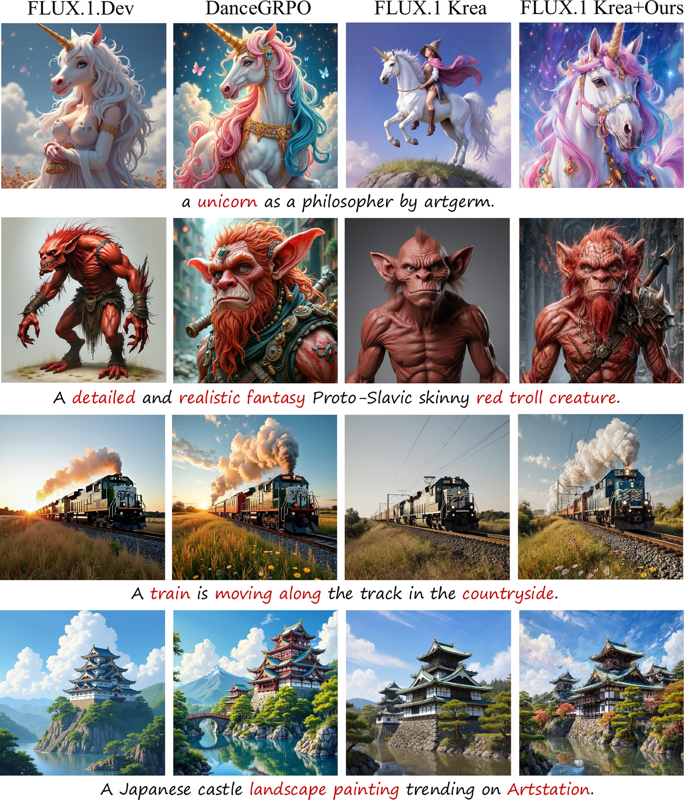
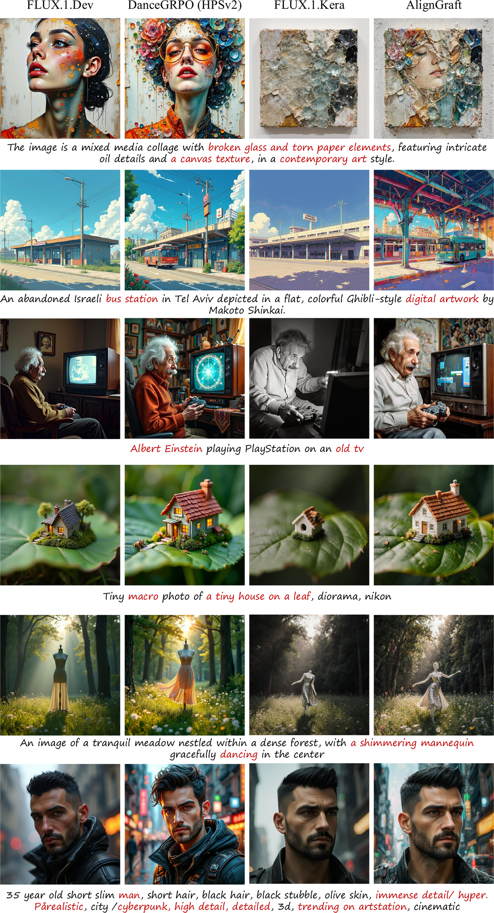
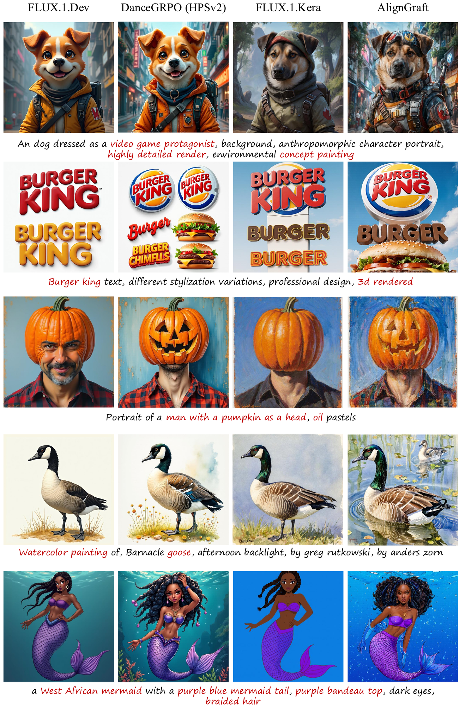
| Reward | Method | Aes | MPS | IR | HPS v2.1 | HPSv3 | VQ | MQ | TA |
|---|---|---|---|---|---|---|---|---|---|
| HPSv2 | Wan-Fun-1.3B (source base) | 4.942 | 0.088 | −0.466 | 0.2235 | 2.887 | −0.829 | −0.500 | −0.962 |
| Fun-Reward-HPS (aligned source) | 5.508 | 0.104 | 0.394 | 0.2778 | 7.865 | −0.403 | −0.430 | −0.430 | |
| Wan-Fun-14B (large model) | 5.029 | 0.095 | −0.168 | 0.2292 | 4.470 | −0.761 | −0.339 | −0.602 | |
| Wan-Fun-14B + AlignGraft | 5.533 | 0.111 | 0.549 | 0.2839 | 8.780 | −0.314 | −0.318 | −0.147 | |
| MPS | Wan-Fun-1.3B (source base) | 4.932 | 0.087 | −0.495 | 0.2171 | 1.743 | −0.818 | −0.464 | −0.894 |
| Fun-Reward-MPS (aligned source) | 5.384 | 0.101 | −0.020 | 0.2510 | 5.615 | −0.468 | −0.399 | −0.580 | |
| Wan-Fun-14B (large model) | 5.187 | 0.097 | 0.060 | 0.2376 | 5.416 | −0.717 | −0.348 | −0.483 | |
| Wan-Fun-14B + AlignGraft | 5.530 | 0.112 | 0.500 | 0.2666 | 7.983 | −0.331 | −0.321 | −0.231 |
Text-to-video transfer on Wan-Fun backbones with two reward sources (\(w{=}1\)). The transfer surpasses both the frozen large model and the aligned source on every judge, with motion quality preserved.
Text-to-video transfer on Wan2.1-Fun. A small source pair (Wan-Fun-1.3B base and its reward-aligned counterpart) guides the frozen Wan-Fun-14B target at \(w{=}1\). Each case shows four branches generated from the same prompt — source base, aligned source, frozen target, and Target + Ours (highlighted). Use “Play all” to compare synchronously, or click a clip to enlarge.
@article{xie2026aligngraft,
title={Test-Time Weak-to-Strong Alignment: Transferring Implicit Rewards from Weak to Strong Flow Models},
author={Xie, Xin and Zhang, Fan and Gong, Dong},
journal={arXiv preprint},
year={2026}
}